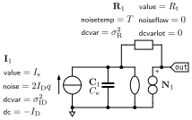

Transimpedance
R1 out 1 R value={R_t} dcvar={sigma_R^2} dcvarlot={0} noisetemp={T} noiseflow={0}
N1 out 0 1 0 N
I1 0 1 I value={I_s} dc={-I_D} dcvar={sigma_ID^2} noise={2*q*I_D}
C1 1 0 C value={C_s}
.end
| RefDes | Nodes | Refs | Model | Param | Symbolic | Numeric |
|---|---|---|---|---|---|---|
| C1 | 1 0 | C | value | $C_{s}$ | $C_{s}$ | |
| vinit | $0$ | $0$ | ||||
| I1 | 0 1 | I | value | $I_{s}$ | $I_{s}$ | |
| dc | $- I_{D}$ | $- I_{D}$ | ||||
| dcvar | $\sigma_{ID}^{2}$ | $\sigma_{ID}^{2}$ | ||||
| noise | $2 I_{D} q$ | $3.204 \cdot 10^{-19} I_{D}$ | ||||
| N1 | out 0 1 0 | N | ||||
| R1 | out 1 | R | value | $R_{t}$ | $R_{t}$ | |
| dcvar | $\sigma_{R}^{2}$ | $\sigma_{R}^{2}$ | ||||
| dcvarlot | $0$ | $0$ | ||||
| noisetemp | $T$ | $300$ | ||||
| noiseflow | $0$ | $0$ |
| Name | Symbolic | Numeric |
|---|---|---|
| $T$ | $300$ | $300$ |
| $q$ | $160.2\cdot 10^{-21}$ | $160.2\cdot 10^{-21}$ |
| Name |
|---|
| $\sigma_{R}$ |
| $\sigma_{ID}$ |
| $R_{t}$ |
| $I_{D}$ |
| $C_{s}$ |
| $I_{s}$ |
Go to Transimpedance_index
SLiCAP: Symbolic Linear Circuit Analysis Program, Version 6.0 © 2009-2025 SLiCAP development team
For documentation, examples, support, updates and courses please visit: analog-electronics.tudelft.nl
Last project update: 2026-09-21 14:39:26